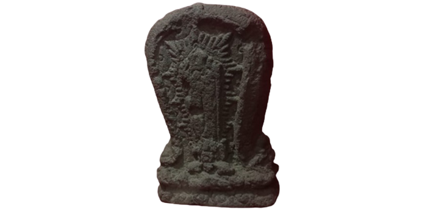
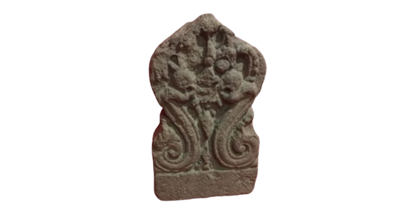
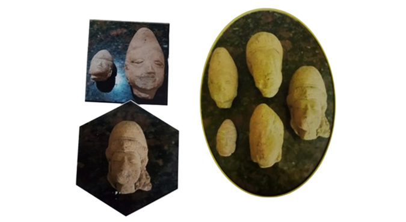
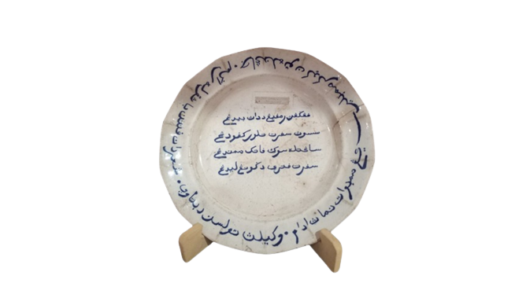
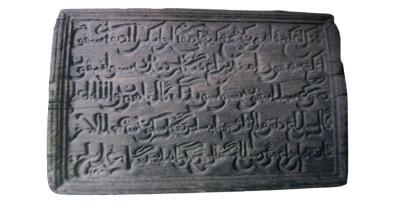
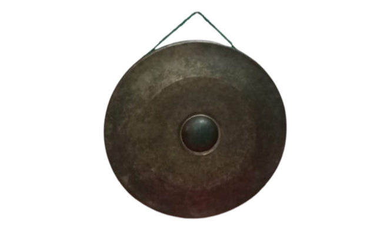

Troloyo (Motif Surya)
Dimensi (cm) : t = 33 tb = 10 l = 21
Asal : Dusun Sidodadi Desa Sentonorejo Kecamatan Trowulan
Tarikh : Saka 1303 (1381-2 Masehi)
Spesifikasi : surya merupakan salah satu ciri khas kesenian Majapahit sebagai perwujudan pancaran sinar matahari. Pada bagian tengah terdapat relief sembilan dewa penjaga mata angin (Dewata Nawa Sanga) yang terdiri dari Siwa (pusat), Iswara (timur), Madewa (barat), Wisnu (utara), Brahma (selatan), Syambu (timur laut), Rudra (tenggara), Mahesora (barat daya), dan Sangkara (barat laut).
DESKRIPSI :Kompleks Makam Troloyo dianggap sebagai makam Islam yang ada di Ibukota Majapahit.Hasil penelitian yang dilakukan LC Damais adalah menemukan banyak nisan yang salah satunya nisan yang bermotif Surya
(surya adalah pancaran sinar matahari yang dianggap sebagai ciri khas kesenian Majapahit).
Troloyo (Motif Kala)
Dimensi (cm) : t = 28 tb = 7 I = 18
Asal : Desa Trowulan
Spesifikasi : Kala adalah salah satu binatang mithologi Hindu yang digambarkan sangat menakutkan, mata melotot, mulut menyeringai memperlihatkan taringnya.
DESKRIPSI : Kompleks Makam Troloyo dianggap sebagai makam Islam yang ada di Ibukota Majapahit.
Hasil penelitian yang dilakukan LC Damais adalah menemukan banyak nisan yang salah satunya nisan yang bermotif Kala
yang menunjukan adanya akulturasi budaya di Majapahit.
Nisan Troloyo
spesifikasi 1 : Batu ini dilaporkan berasal dari area makam Sunan Ngudung komplek makam Troloyo.
Nisan Troloyo ini dipublikasikan pertama kali oleh Dr. Verbeek dalam catatan yang disampaikan kepada Batavia
Genoostschap (perkumpulan seni dan ilmu-ilmu di Batavia) pada tahun 1887. Pada saat itu Verbeek membaca angka tahun Nisan ini 1198 Saka
(Damais,1995: 229).
spesifikasi 2 : Pada salah satu sisi terdapat inskripsi bertulis kan angka tahun Jawa Kuno 1344 Saka (1422-3 Maschi)
DESKRIPSI : Nisan-nisan ini ditemukan di kompleks Makam Troloyo dan diperkirakan berasal dari masa pemerintahan Kerajaan Majapahit.
Nisan merupakan salah satu unsur makam yang berfungsi sebagai peranda Bagian kepala, kaki serta penentu arah bujur orang yang dikuburkan. Nisan lokal umumnya terbuat dan hatu berbentuk kurawal/lengkung
kala merga, dengan hiasan tumpai,terata,madalion dan sulur. Terdapat inskripsi yang menyebut tahun meninggalnya dalam angka Jawa Kuna, serta kalimat Syahadat dan ayat-ayat suci Al-Qur'an dalam bahasa dan tulisan Arab.
Figuran Terakota Muslim
Pada masa Majapahit abad 13-16 masehi,Komunitas muslim telah berkembang dan hidup bersama dengan agama lain secara harmonis. Berita Cina yang dituin oleh Ma Huan pada abad 15 Masehi saat berkunjung ke Majapahit, menceritakan bahwa masyarakat Majapahit saat itu berbagi dalam tiga kategori, yaitu: 1. Masyarakat dari Timur jauh yagama Islam. 2. Masyarakat dari Tiong How yang beragat alam 3. Masyarakat pribumi yang beragama Hinda - Buddha Gambaran mengenai hal ini didukung oleh bukti arkeologis dengan ditemukannya figurin terakota yang menggunakan atribut muslim seperti peci, adibin dan Jubah garnis.
Piring Keramik Tulisan Arab
NAMA KOLEKSI : PIRING NO INVENTARIS
73/PRC/JMB/80/PIM
UKURAN :
Diameter=25,8 cm
Tinggi = 3,5 cm
BAHAN = Porselin
WARNA = Putih-biru
Merupakan piring Eropa yang bertuliskan huruf Arab dan berbahasa Melayu. Pada bagian tengah bertuliskan:"Pinggang ramping, dadanya bidang Susunya seperti tutul kepodang Sangatlah suka patik memandang Seperti putri di gunung Ledang". ada bagian bibir bertuliskan:"yang membuat namanya Adam wakilnya tulisan di Betawi, syair dan pantun banyaklah ragamnya, janganlah tuan kikir membayar".
Prasasti Tulisan Arab
NAMA KOLEKSI PRASASTI
NO INVENTARIS : tanpa nomor
UKURAN :
Panjang= 78 cm
lebar= 55 cm
tebal= 5,5 cm
BAHAN : Kayu
WARNA : Coklat
ASAL : Makam Pusponegoro, Gresik, Jawa Timur
DESKRIPSI
Prasasti ini bertuliskan huruf Arab dan berbahasa Jawa.
Prasasti ini semula berada di ambang pintu masuk kompleks makam Pusponegoro.
Pada prasasti ini menyebutkan nama yang dimakamkan adalah Kanjeng Kyai Adipati Brojonegoro Adipati Sepuh.
Pertunjukan Wayang Sebagai Syiar Para Wali
Pertunjukan wayang merupakan salah satu cara penyebaran ajaran Islam di Pulau Jawa.
Tokoh yang terkenal dalam mengenalkan islam dengan cara ini adalah Sunan Kalijaga, Beliau memadukan dakwah dengan seni budaya yang mengakar di masyarakat, melalui wayang, gamelan, tembang, ukir dan batik.
Beliau mengubah beberapa lakon wayang seperti lakon Jimat Kalimasada , Dewa Ruci dan Petruk Dadi Ratu.
Lakon Jimat Kalimasada paling sering dipentaskan, Sunan Kalijaga mengajak masyarakat pedesaan maupun di kota keprajan untuk mengucapkan syahadat.
Beliau pandai mendalang dengan nama Ki Dalang Sida Brangti, serta mengarang lakon-lakon wayang dan menyelenggarakan pagelaran wayang kulit dengan upah ucapan Kalimat Syahadat.
Puja-puji dalam kenduri di masyarakat diganti dengan do'a dan bacaan dari kitab suci Al Qur'an.
Wayang dalam Nilai-Nilai Kekinian
Wiracarita wayang mengandung nilai pendidikan yang lengkap. Moral, kesetiaan, kejujuran tidak hanya lewat cerita saja, tetapi juga ditunjukkan melalui karakter dari para tokoh cerita wayang. Salah satunya, pendidikan filsafat dapat ditemukan pada cerita Dewa Ruci.
Pagelaran wayang terdapat suatu adegan dengan penonjolan peran para Punakawan.
Gaya humor para Punakawan dapat dipakai sebagai alat penyampaian kritikan sosial.
Hal ini juga menunjukkan bahwa pagelaran wayang menjadi media penerangan yang lebih menarik.
Pagelaran wayang merupakan hiburan tersendiri bagi para penikmatnya, mereka bisa menikmati seni sastra yang disampaikan Dalang,bentuk wayang, suara alunan gending dan gamelan dipadu alunan suara dalang dan waranggana,
sehingga pagelaran semalam suntuk dengan suluk patet enem, sanga dan manyura menjadi segar tidak membosankan.
Alat Musik Gong
Gong adalah potongan logam besar, pipih, dan melingkar yang dipukul dengan palu untuk menghasilkan suara seperti lonceng yang keras. Gong bagian dari salah satu musik karawitan yang digunakan untuk memberi isyarat bahwa sudah waktunya untuk melakukan sesuatu. Dulu Para wali terutama (sunan Kalijaga) menggunakan untuk melengkapi pertunjukan wayang dalam menyebarkan agama Islam. Para wali berupaya melakukan penyesuaian nilai dan tradisi lokal agar mudah diterima oleh masyarakat terutama ketika melakukan penyebaran islam di Majapahit dan sekitar.

- 
- 
- 
- 
- 
- 
Saran dan Kritik
© PENGELOLAAN INFORMASI MAHAPAHIT 2023